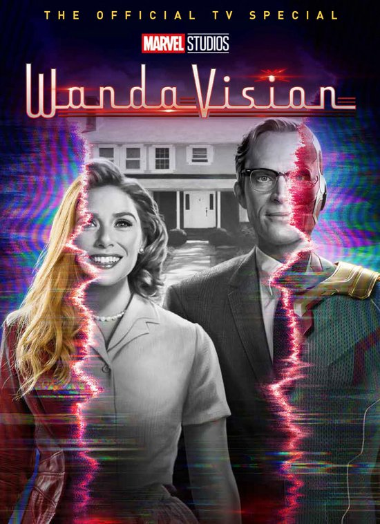

▷ Je kan de series vinden op Disney+
▷ 1 seizoen
▷ Het is voor 12 jaar en ouder
▷ Genre: romantiek, drama en sciencefiction
▷ Cast: Elizabeth Olsen (Wanda Maximoff), Paul Bettany (Vision), Kathryn Hahn (Agatha Harkness)
▷ Samenvatting: De serie gaat over het liefdesverhaal tussen Wanda Maximoff (Scarlet Witch) en Vision. Wanda en Vision leven in een komedie, Maar waarom? en hoe?
▷ Onze mening: het is een mooie serie meer weet ik niet. Ik vind het persoonlijk echt een aanrader.
